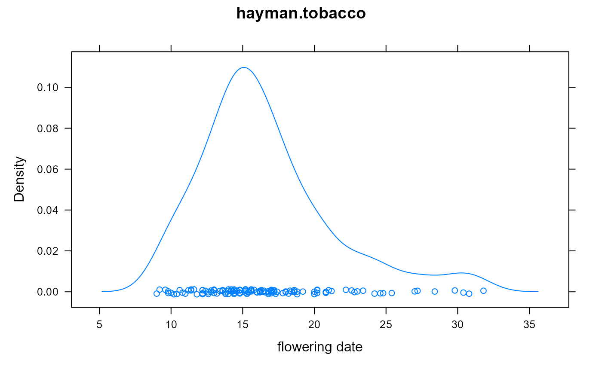
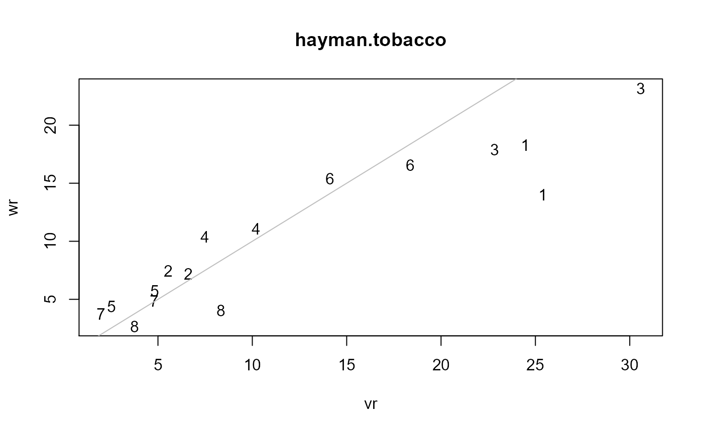

hayman.tobacco.RdDiallel cross of Aztec tobacco in 2 reps
yearyear
blockblock factor, 2 levels
malemale parent, 8 levels
femalefemale parent
daymean flowering time (days)
Data was collected in 1951 (Hayman 1954a) and 1952 (Hayman 1954b).
In each year there were 8 varieties of Aztec tobacco, Nicotiana rustica L..
Each cross/self was represented by 10 progeny, in two plots of 5 plants each. The data are the mean flowering time per plot.
Note, the 1951 data as published in Hayman (1954a) Table 5 contain "10 times the mean flowering time". The data here have been divided by 10 so as to be comparable with the 1952 data.
Hayman (1954b) says "Table 2 lists...three characters from a diallel cross of Nicotiana rustica varieties which was repeated for three years." This seems to indicate that the varieties are the same in 1951 and 1952. Calculating the GCA effects separately for 1951 and 1952 and then comparing these estimates shows that they are highly correlated.
B. I. Hayman (1954a). The Analysis of Variance of Diallel Tables. Biometrics, 10, 235-244. Table 5, page 241. http://doi.org/10.2307/3001877
Hayman, B.I. (1954b). The theory and analysis of diallel crosses. Genetics, 39, 789-809. Table 3, page 805. http://www.genetics.org/content/39/6/789.full.pdf
# For 1951 data
Mohring, Melchinger, Piepho. (2011). REML-Based Diallel Analysis. Crop Science, 51, 470-478.
# For 1952 data
C. Clark Cockerham and B. S. Weir. (1977). Quadratic analyses of reciprocal crosses. Biometrics 33, 187-203. Appendix C.
library(agridat) # 1951 data. Fit the first REML model of Mohring 2011 Supplement. data(hayman.tobacco) dat1 <- subset(hayman.tobacco, year==1951) # Make a factor 'comb' in which G1xG2 is the same cross as G2xG1 dat1 <- transform(dat1, comb = ifelse(as.character(male) < as.character(female), paste0(male,female), paste0(female,male))) # 'dr' is the direction of the cross, 0 for self dat1$dr <- 1 dat1 <- transform(dat1, dr = ifelse(as.character(male) < as.character(female), -1, dr)) dat1 <- transform(dat1, dr = ifelse(as.character(male) == as.character(female), 0, dr)) # ASREML code for Mixed Griffing. # Mohring Table 2, column 2 (after dividing by 10^2) gives variances: # GCA 12.77, SCA 11.09, RSCA .65, Error 4.23. # Mohring Supplement ASREML code part1 model is: # y ~ mu r !r mother and(father) combination combination.dr # Note that the levels of 'male' and 'female' are the same, so the # and(female) term tells asreml to use the same levels (or, equivalently, # fix the correlation of the male/female levels to be 1. # The block effect is minimial and therefore ignored. ## m1 <- asreml(day~1, data=dat1, ## random = ~ male + and(female) + comb + comb:dr) ## libs(lucid) ## vc(m1) ## effect component std.error z.ratio con ## male!male.var 12.77 7.502 1.7 Positive ## comb!comb.var 11.11 3.353 3.3 Positive ## comb:dr!comb.var 0.6603 0.4926 1.3 Positive ## R!variance 4.185 0.7449 5.6 Positive # -------------------- # 1952 data. Reproduce table 3 and figure 2 of Hayman 1954b. dat2 <- subset(hayman.tobacco, year==1952) # Does flowering date follow a gamma distn? Maybe. libs(lattice) densityplot(~day, data=dat2, main="hayman.tobacco", xlab="flowering date")d1 <- subset(dat2, block=='B1') d2 <- subset(dat2, block=='B2') libs(reshape2) m1 <- acast(d1, male~female, value.var='day') m2 <- acast(d2, male~female, value.var='day') mn1 <- (m1+t(m1))/2 mn2 <- (m2+t(m2))/2 # Variance and covariance of 'rth' offspring vr1 <- apply(mn1, 1, var) vr2 <- apply(mn2, 1, var) wr1 <- apply(mn1, 1, cov, diag(mn1)) wr2 <- apply(mn2, 1, cov, diag(mn2)) # Remove row names to prevent a mild warning rownames(mn1) <- rownames(mn2) <- NULL summ <- data.frame(rbind(mn1,mn2)) summ$block <- rep(c('B1','B2'), each=8) summ$vr <- c(vr1,vr2) summ$wr <- c(wr1,wr2) summ$male <- rep(1:8,2) # Vr and Wr match Hayman table 3 with(summ, plot(wr~vr, type='n', main="hayman.tobacco"))# Hayman notes that 1 and 3 do not lie along the line, # so modifies them and re-analyzes.